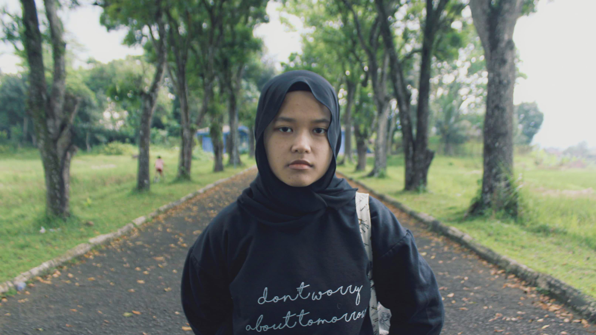
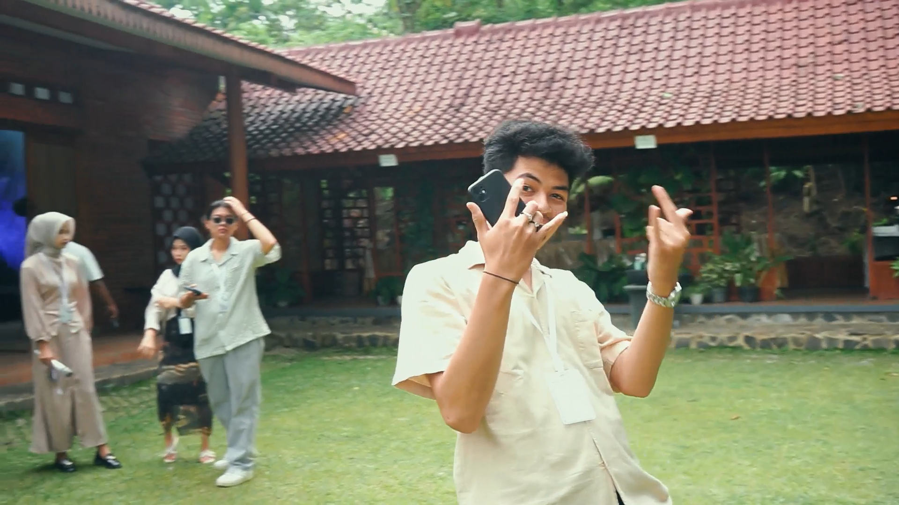
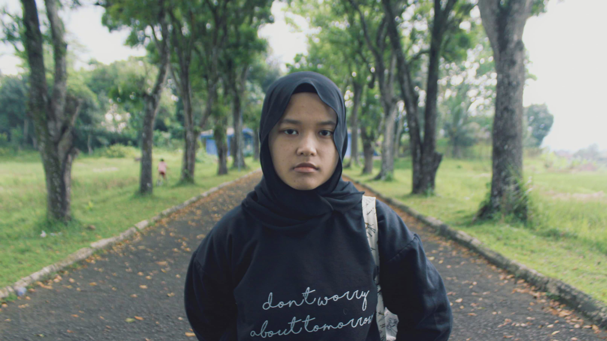
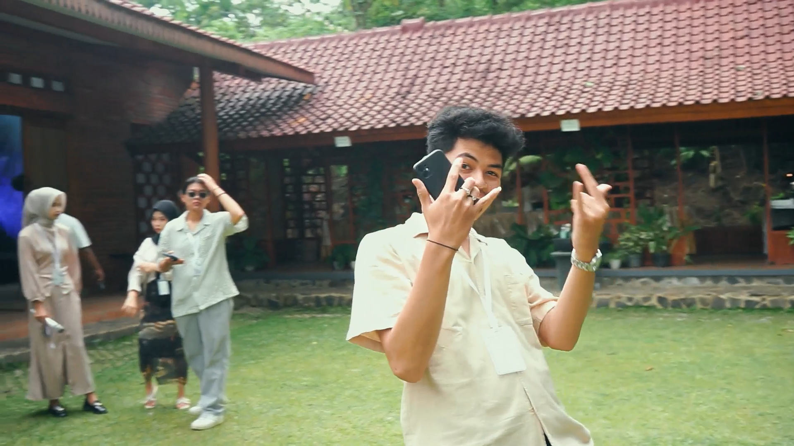

Saya Piki Alpian, seorang videographer dengan passion dalam menangkap momen dan menciptakan visual storytelling yang menarik. Dengan pengalaman dalam berbagai proyek, mulai dari video komersial, dokumenter, hingga konten kreatif, saya selalu berusaha menghadirkan hasil terbaik yang sesuai dengan kebutuhan klien.
Lebih dari 4 tahun berpengalaman di bidang videografi.
Terampil dalam manajemen waktu dan memenuhi deadline.
Passionate tentang videografi dan selalu berusaha memberikan yang terbaik.
Menguasai penggunaan kamera profesional dan software editing terbaru.
Mampu bekerja dalam tim dan berkolaborasi dengan berbagai profesional kreatif.
Fleksibel dan dapat beradaptasi dengan berbagai jenis proyek.
Hasil video yang berdampak dan memenuhi tujuan klien.
 



Hasil videonya sangat profesional dan sesuai dengan brand kami. Detailnya sangat diperhatikan, dan storytelling-nya benar-benar kuat. Pasti akan bekerja sama lagi di proyek berikutnya! — Adit, Digital Marketing Manager
Editingnya rapi, cinematic look-nya mantap! Videonya bikin engagement di sosial media meningkat drastis. Pokoknya puas banget! — Sarah, Content Creator
"Hasilnya benar-benar di luar ekspektasi! Cinematography, editing, dan storytelling-nya sangat kuat. Setiap adegan terasa hidup dan emosinya sampai ke penonton. Terima kasih sudah mewujudkan visi kami dalam bentuk film yang luar biasa!" — Kevin, Sutradara Short Movie
Videonya sukses bikin nostalgia! Momen-momen terbaik selama sekolah terekam dengan sempurna, dan editingnya bikin vibes-nya makin terasa. Terima kasih sudah membuat kenangan ini tak terlupakan!" — Tresna, Ketua Angkatan